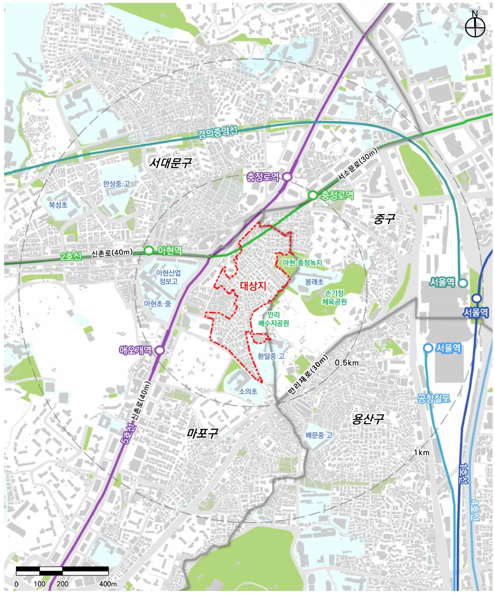
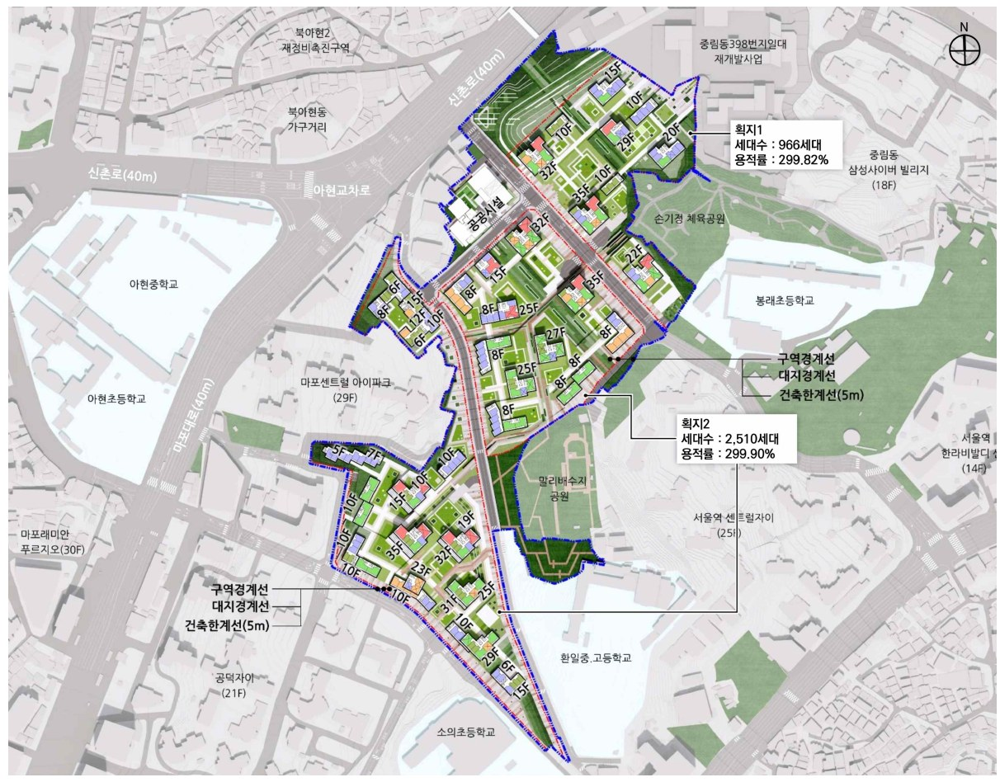
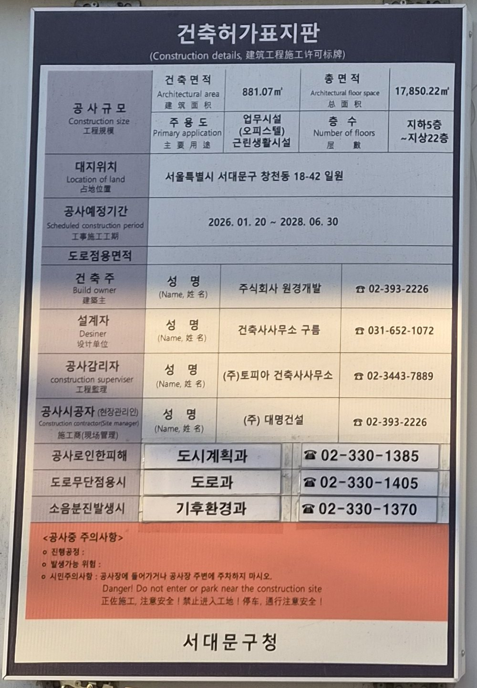
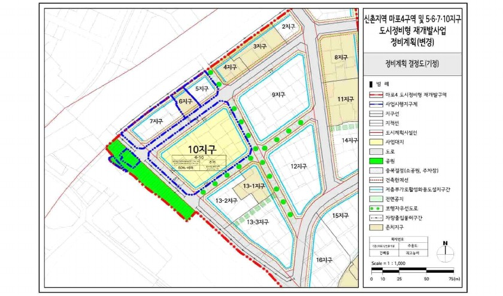
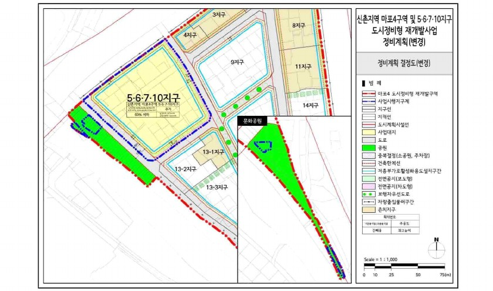
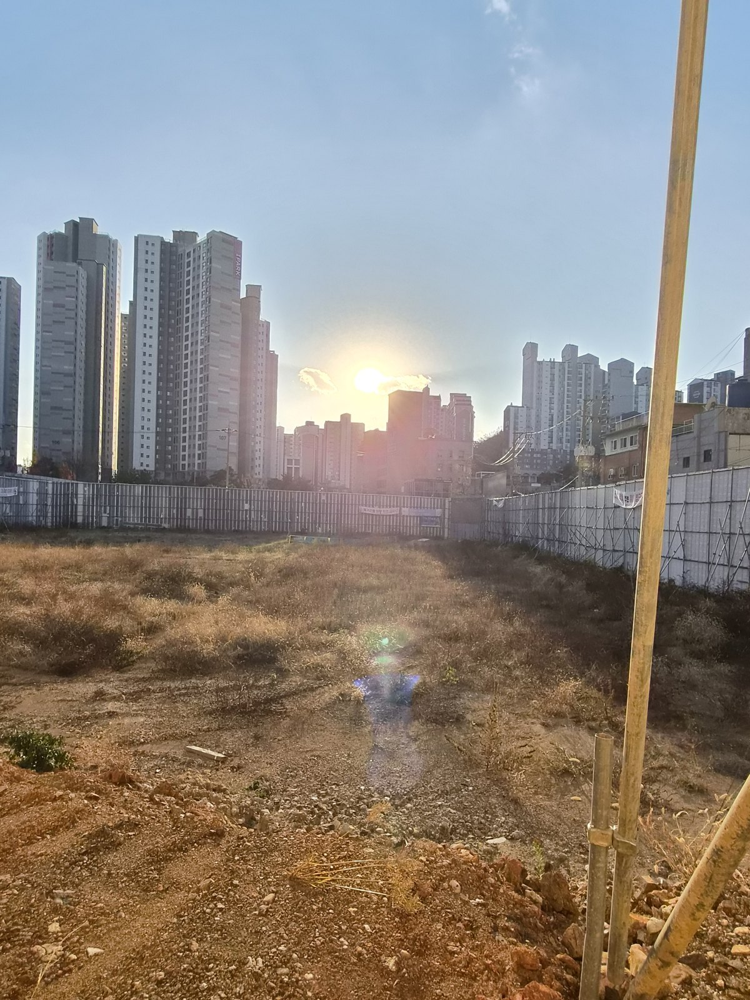
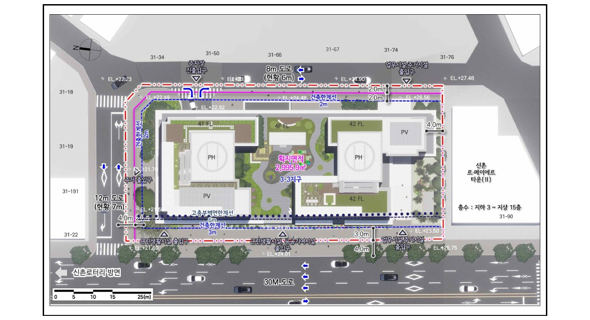
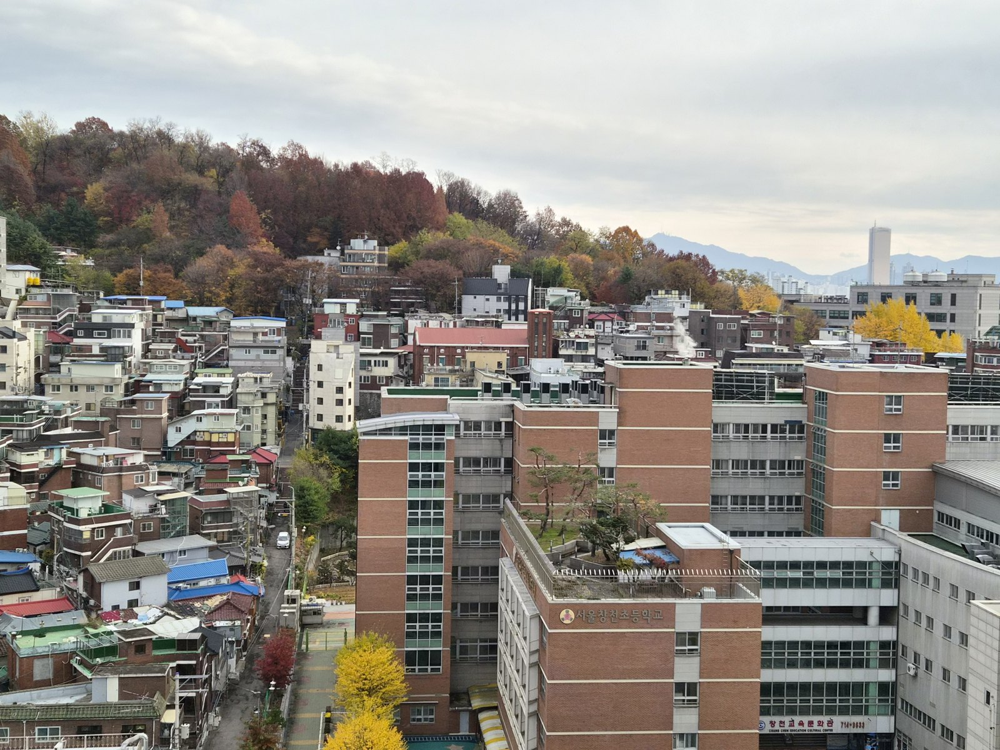
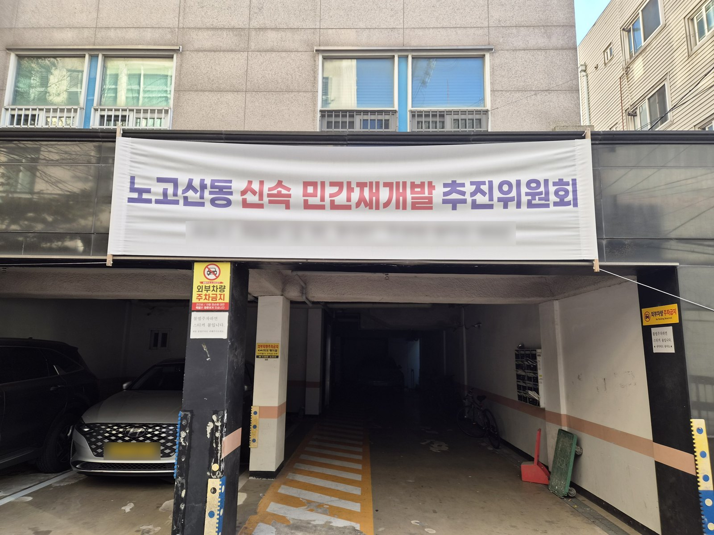

아현1구역 3,476세대.
신촌 노고산동 49층.
요즘 두 사무실에서
제일 자주 듣는 동네 이야기예요.
그런데 저는 기사 제목보다
"이게 정말 될까?"가
더 궁금하더라고요.
그래서 구청이 구의회에 낸
정비계획 원문을
직접 찾아 읽어봤어요.
팩트는 짧게,
제 생각은 솔직하게 써볼게요.
안녕하세요. 착한언니복덕방 신촌자이엘라&마포그랑자이 (착한언니) 부동산입니다.
2014년 겨울부터 신촌 한 자리, 12년째 마포·서대문만 보고 있어요.
※ 정비계획(안)·심의
단계 수치라 바뀔 수 있어요.
투자 권유가 아니라 제 개인적인 분석이에요.
| 1. 아현1구역, 막힌 건 풀었어요 |

▲ 아현1구역 위치 (아현동 699 일대) —
아현역·애오개역·충정로역 사이
/ 마포구의회
의견청취안(2025.11, 마포구청 제출)
| 팩트 | |
| 규모 | 3,476세대 · 최고 35층 · 10만 6천㎡ |
| 시행 | SH 공공재개발 |
| 단계 | 정비구역 지정(2026.5) → SH 사업시행자 지정(2026.9) → 첫 주민총회(11.7) |
| 권리산정기준일 | 2020.8.20 (서울시 고시 제2020-346호) |
마포구의회 의견청취안·언론 보도 기준
이 동네가 20년 멈춰 있던 이유는
딱 하나예요.
지분이 너무 잘게
쪼개져 있었거든요.
80년대 판자촌을 허물고
주민들이 직접 빌라를 지으면서
한 필지를 여러 명이
나눠 가졌어요.
지분이 작으면
새 아파트를 못 받아요.
그래서 740명이
현금청산 대상이었고,
이분들 입장에선 재개발에
찬성할 이유가 없었죠.
SH가 내놓은 답이
14㎡(약 4.5평)
아파트 30세대예요.
가장 작은 새 집 값을
1억 9천만 원대로 낮춰서
지분이 작은 분들도
분양 자격을 갖게 한 거예요.
740명 → 156명
저는 이 부분은
정말 잘 풀었다고 봐요.
사람을 살리는 쪽으로
구조를 바꾼 거니까요.
| 2. 그런데, 이게 정말 될까? |
막힌 걸 풀었다고
사업성이 생긴 건 아니에요.
제가 걸리는 건 세 가지예요.
① 일반분양이 사실상 없어요
| 전용 | 전체 | 토지등소유자 분양 | 임대·공공분양 |
| 14㎡ | 30 | 30 | - |
| 29㎡ | 810 | 679 | 131 |
| 39㎡ | 847 | 494 | 353 |
| 49㎡ | 515 | 475 | 40 |
| 59㎡ | 892 | 863 | 29 |
| 84㎡ | 382 | 239 | 143 |
| 합계 | 3,476 | 2,780 | 696 |
마포구의회 의견청취안 '주택의 규모 및 규모별
건설비율' · 최종 분양은 사업시행인가 시 확정
3,476세대 중 2,780세대가
원래 주인들 몫이고,
나머지는 임대예요.
보통 재개발은
일반분양으로 번 돈으로
공사비를 메우는데,
여기는 그 돈이 거의 없어요.
결국 공사비는
조합원(토지등소유자)이
나눠 낸다고 봐야 해요.
② 작은 평형이 너무 많아요
29~49㎡가 1,648세대예요.
(조합원 분양분 기준)
지분이 작은 분이
그만큼 많다는 뜻이고,
큰 평형으로 갈 수 있는
분은 적다는 뜻이에요.
③ 높낮이 차가 59m인 언덕이에요
영화 '기생충' 계단 장면,
기억나시죠?
언덕 땅은 깎고
다지는 데부터 돈이 들어요.
공사비가 평지보다
쉽게 내려가긴 어려워요.

▲ 아현1구역 배치도 —
획지1 966세대·획지2
2,510세대 / 마포구의회
의견청취안(2025.11)
| 항목 | 정비계획(안) 추정 |
| 조합원 분양가 | 59㎡ 10억 · 84㎡ 12억 5,800만 |
| 권리가액 5.5억 가정 분담금 | 49㎡ 약 3.3억 · 59㎡ 약 4.4억 |
| 추정 비례율 | 102.58% |
하우징워치(2025.9.30) 보도의
2025.9 주민설명 추정치 · 인근에선 59㎡
분담금이 10억에 이를 수 있다는 말도
나온다는 보도(머니투데이 2026.11.11)
그래도 플러스는 있어요.
SH가 시행하니까
이주비 최대 3억(LTV 40%),
공사비 최대 70% 대출이 붙어요.
민간이었으면 여기까지
오지도 못했을 거예요.
| 3. 착한언니 생각 — 아현1구역 |
저는 "되긴 될 것
같다" 쪽이에요.
공공이 붙었고,
주민총회까지 열렸으니까요.
다만 진짜 질문은
"얼마를 내고 들어가느냐"예요.
그게 처음 숫자로 나오는 게
시공사
선정(2027년 상반기 목표)
때예요.
그 전까지는 분담금 숫자는
다 추정이에요.
✔ 지분 매수를 생각하신다면 —
권리산정기준일(2020.8.20)
이후 쪼갠 지분은 입주권이
안 나올 수 있어요
✔ 지하층·무허가
건물은 아직 구제 대상이
아니에요
(약 130세대, 소송 진행 여지)
✔ 공부해 보실 만한 곳이지만,
시공사·공사비가 나오기
전 판단은 이르다고 봐요
| 4. 노고산동은 '지구'로 쪼개서 봐야 해요 |
노고산동은 아현1처럼
한 번에 짓는 재개발이 아니에요.
신촌역 일대를 작은
'지구'로 나눠서
지구마다 따로 지어요.
그래서 같은 동네인데
속도가 다 달라요.

▲ 신촌지역 마포4구역 지구별 추진현황 —
15지구 완료,
9·10·12지구 관리처분인가
/ 마포구의회 의견청취안(2026.2)
이 동네에 개발 얘기가
끊이지 않는 이유는
결국 입지예요.
연대·이대·서강대가
받쳐주는 대학가,
서강대교만 건너면 여의도,
2호선 한 번이면 강남이에요.
이게 어떤 느낌인지는
신촌로터리 건너편을
보면 바로 알아요.

▲ 신촌로터리 건너편
서대문구 창천동 2-2지구 —
이미 크레인이 올라갔어요
(직접 촬영 2026.11)
| 신촌 2-2지구 (서대문구 창천동 18-42) | |
| 규모 | 지하 5층 ~ 지상 22층 · 오피스텔·근린생활시설 |
| 공사기간 | 2026.1.20 ~ 2028.6.30 (착공) |
| 용적률 | 834.81% |
| 시공 | 대명건설 |
현장 건축허가표지판 (서대문구청) 기준

▲ 2-2지구 건축허가표지판 (직접 촬영)
같은 '신촌지역
도시정비형 재개발'인데
여기는 벌써 짓고 있고,
길 건너 노고산동은
이제 철거 중이에요.
지구마다 시계가 따로 가는 거예요.
| 5. ① 5·6·7·10지구 — 셋 중 제일 현실적이에요 |
| 팩트 | |
| 위치 | 노고산동 109-62 일대 (서강대역~신촌역 사이) |
| 계획 | 지상 49층 · 497세대 (공공임대 53) |
| 단계 | 도시계획위원회 수정가결(6.26) → 정비계획 변경 결정 고시 (2026.9.23) |
서울시 보도자료(2026.6.28)
· 서울특별시고시
제2026-543호(서울시보 제4181호)

▲ 정비계획 결정도 (기정) —
10지구와 작은 5·6·7지구가
따로 / 서울특별시고시
제2026-543호(2026.9.23)

▲ 정비계획 결정도 (변경) —
4개 지구 통합 /
서울특별시고시
제2026-543호(2026.9.23)
제가 여기를
제일 현실적으로 보는 이유는
10지구가
이미 관리처분인가(2025.3)까지
받은 곳이라서예요.
권리관계가 정리된 땅에
혼자서는 못 짓던 옆의
작은 땅(5·6·7지구)을
붙인 거예요.
그리고 주용도를
업무 → 주거로 바꿨어요.
요즘 시장에서 오피스보다
주거가 더 확실하다고
본 판단 같아요.
정비계획 변경 고시도
9월 23일에 이미 났어요.
서류상 첫 관문은 넘은 거예요.
그리고 직접 가봤더니,
땅이 이미 비어 있어요.

▲ 마포4-10지구 현장 — 철거가 끝나고
빈 땅만 남았어요 (직접 촬영 2026.11)

▲ 해체공사 안내 표지판 —
노고산동 109-91 외 25필지,
해체규모 7,558㎡,
2025.8.18~2026.1.31
(직접 촬영)
철거 표지판엔 2025년
8월~2026년 1월로 적혀 있고,
지금은 풀만 자란 빈 땅이에요.
빈 땅이 됐다는 건
이주·철거라는 제일 시끄러운
고비를 넘겼다는 뜻이에요.
제가 셋 중 여기를 제일 현실적으로
보는 이유가 하나 더 생긴 거죠.

▲ 서강대역 1번 출구 —
현장까지 걸어서 금방이에요 (직접 촬영)
✔ 지켜볼 것:
사업시행계획 변경인가
→ 관리처분 변경 → 착공 시점
✔ 49층 초고층이라
공사비가 얼마로 나오는지
| 6. ② 3지구 — 멈췄다가, 다시 움직여요 |
| 예전(2022) | 지금 | |
| 층수 | 27층 | 42층 |
| 세대 | 288 | 298 |
| 평형 | 소형 위주 | 59·84㎡ 중형 위주 |
| 단계 | 관리처분인가까지 받고 멈춤 | 2026.8.6 통합심의 조건부 의결 |
구의회 의견청취안(2025.11)
· 서울시 발표(2026.8.7)

▲ 마포3구역 3지구 배치도 —
42층 2개 동,
신촌로터리 방면 30m 도로
/ 구의회 의견청취안(2025.11)
재밌는 건 이 부분이에요.
층수는 거의 두 배가 됐는데
세대수는 10세대만 늘었어요.
작은 집을 많이 짓던 계획을
팔리는 중형 평형으로 바꾼 거예요.
방향은 맞다고 봐요.
이곳은 2022년에
관리처분까지 받고도
사업성 때문에 멈췄던 곳이에요.
그런데 현장에 가보니
철거가 시작됐어요.

▲ 마포3구역 3지구 현장 —
신촌로터리 쪽 가림막
(직접 촬영 2026.11)

▲ 해체공사 안내 표지판 —
노고산동 31-77 외 13필지,
2026.9.1~2027.1.31,
진행공정 철거공사 (직접 촬영)
표지판을 보면
2026년 9월 ~
2027년 1월 철거,
통합심의 통과(8.6) 한
달 만에 바로 들어갔어요.
멈췄던 곳이 다시 움직이는
건 분명해요.
다만 철거는 착공이 아니에요.
땅 3,245㎡에
42층 2개 동이면
공사비 부담이 작지 않거든요.
✔ 철거가 끝나는 내년 초,
착공과 공사비가 실제로
따라오는지 보면 돼요
| 7. ③ 19-1 일대 — 아직 일러요 |

▲ 노고산동 19-1 일대 구역계
(신청인 제출안) / 마포구
구역공개(2025.1)

▲ 창천초등학교 뒤편
노고산 언덕 저층 주택가 —
19-1 일대 방향 (직접 촬영 2026.11)
신속통합기획 후보지에서
2025년 6월 떨어졌어요.
반대 동의율이 취소 요건(25%)에
가까웠다고 해요.
2025년 11월부터
다시 동의서를 받고 있지만
아직 후보지도 아니에요.

▲ 골목에 걸린 '노고산동 신속 민간재개발
추진위원회' 현수막
(직접 촬영 · 연락처 가림)
골목엔 추진위원회 현수막이
걸려 있어요.
하고 싶은 분들이
있다는 건 분명한데,
반대하는 분들도 그만큼 있다는
게 지난번 결과였죠.
관심 있으시면 공부는 해두시되,
지금 판단할 단계는 아니라고 봐요.
| 8. 한 장으로 정리하면 |
| 구역 | 착한언니 한 줄 |
| 아현1구역 | 되긴 될 것 같아요. 관건은 분담금 → 시공사 선정 때 다시 보기 |
| 노고산 5·6·7·10지구 | 셋 중 가장 현실적 (9.23 고시 · 철거 끝난 빈 땅) → 착공 시점 보기 |
| 노고산 3지구 | 멈췄다가 철거 시작 (~2027.1) → 착공·공사비 따라오는지 보기 |
| 노고산 19-1 | 아직 일러요 → 후보지 선정 여부부터 |
두 동네 다 저희 사무실에서 걸어서
갈 거리라,
단계가 바뀔 때마다
다시 정리해 드릴게요.
| 📝 착한언니 현장 노트 |
✍️ [직접 채우기: 이 글 주제로 사무소에서 실제로 받은 문의·현장에서 본 것·거래하며 느낀 점 2~3줄 — 가격 전망 없이]
| 📊 착한언니복덕방 실거래 도구 단지 시세 · 내 예산 진단 리포트 신촌 오피스텔 · 청약까지 중개사가 매일 보는 시세표, 그대로 열어 드려요 👉 unnizip.kr/app |
새 글 알림을 받고 싶으시다면 블로그 이웃 추가 해 두세요. 노고산동 지구별 도면은 「신촌 노고산동 재개발 2026」 글에 따로 정리했어요.
🏢 매수·매도·전세 상담 — 카카오톡 채널 착한언니복덕방에 「단지·평형·예산」을 남겨 주세요. 동·층까지 비교해 드려요.
인스타그램 @goodsister4080 에서는 이런 내용을 카드뉴스로 한눈에 정리해요.
쉽고 꾸준하게, 꼭 부자되세요!
────────────────
도면 출처: 마포구의회 의견청취안(마포구청 제출, 2025.11·2026.2), 마포구 구역공개(2025.1) · 수치는 정비계획(안)·심의 단계 기준이라 최종 고시와 다를 수 있어요 · 이 글은 투자 권유가 아닌 개인적인 분석이에요
착한언니복덕방 | 신촌자이엘라 & 마포그랑자이 부동산
4인 전원 공인중개사 · 중개보조원 없음
중개사무소: 마포그랑자이(착한언니)부동산공인중개사사무소
대표 공인중개사: 신혜선 · 등록번호 11440-2022-00085
소재지: 서울특별시 마포구 대흥로 175, 상가4동 102호 일부 (대흥동) · 연락처: 02-707-3434
서울시 지정 글로벌 부동산중개사무소 · English available
카카오톡 채널: pf.kakao.com/_xcxoBxnX
붙여넣는 법 (PC 스마트에디터 ONE)
- ① 본문 전체 복사 → 글쓰기 화면 본문에 Ctrl+V
- ② 표·굵게·글자색·형광·가운데 정렬은 그대로 들어가요 (붙여넣은 뒤 표 색이 빠지면 표 선택 → 셀 배경색만 다시 지정)
- ③ 주황 점선 문장은 인용구로 바꿔 주세요: 붙여넣은 문장 지우고 → 상단 [인용구] → 오른쪽 목록의 「문장 복사」로 붙여넣기
- ④ 사진은 붙여넣기로 안 들어가요 → 회색 「▲ 설명」 줄 바로 위에 오른쪽 「이미지 내려받기」 파일을 올려 주세요 (▲ 줄은 사진 설명으로 그대로 두면 돼요) · ✍️ 빨간 줄 = 직접 채울 자리
- ⑤ 맨 아래 법정 표시는 「내 템플릿」에 저장해 둔 서명과 같아요 — 템플릿을 썼다면 이 부분은 지워도 돼요
인용구로 바꿀 문장
- 인용구 · 기본 결론부터 아현1은 '될까'보다 '얼마에 될까'가 문제 · 노고산 5·6·7·10지구는 철거 끝난 빈 땅, 셋 중 가장 현실적 · 3지구는 멈췄다가 철거 시작 · 19-1은 아직 일러요
이미지 내려받기 (직접 업로드)
- 아현1구역 위치 (아현동 699 일대) — 아현역·애오개역·충정로역 사이 / 마포구의회 의견청취안(2025.11, 마포구청 제출)
- 아현1구역 배치도 — 획지1 966세대·획지2 2,510세대 / 마포구의회 의견청취안(2025.11)
- 신촌지역 마포4구역 지구별 추진현황 — 15지구 완료, 9·10·12지구 관리처분인가 / 마포구의회 의견청취안(2026.2)
- 신촌로터리 건너편 서대문구 창천동 2-2지구 — 이미 크레인이 올라갔어요 (직접 촬영 2026.11)
- 2-2지구 건축허가표지판 (직접 촬영)
- 정비계획 결정도 (기정) — 10지구와 작은 5·6·7지구가 따로 / 서울특별시고시 제2026-543호(2026.9.23)
- 정비계획 결정도 (변경) — 4개 지구 통합 / 서울특별시고시 제2026-543호(2026.9.23)
- 마포4-10지구 현장 — 철거가 끝나고 빈 땅만 남았어요 (직접 촬영 2026.11)
- 해체공사 안내 표지판 — 노고산동 109-91 외 25필지, 해체규모 7,558㎡, 2025.8.18~2026.1.31 (직접 촬영)
- 서강대역 1번 출구 — 현장까지 걸어서 금방이에요 (직접 촬영)
- 마포3구역 3지구 배치도 — 42층 2개 동, 신촌로터리 방면 30m 도로 / 구의회 의견청취안(2025.11)
- 마포3구역 3지구 현장 — 신촌로터리 쪽 가림막 (직접 촬영 2026.11)
- 해체공사 안내 표지판 — 노고산동 31-77 외 13필지, 2026.9.1~2027.1.31, 진행공정 철거공사 (직접 촬영)
- 노고산동 19-1 일대 구역계 (신청인 제출안) / 마포구 구역공개(2025.1)
- 창천초등학교 뒤편 노고산 언덕 저층 주택가 — 19-1 일대 방향 (직접 촬영 2026.11)
- 골목에 걸린 '노고산동 신속 민간재개발 추진위원회' 현수막 (직접 촬영 · 연락처 가림)


📷 촬영해서 넣을 사진
- 착한언니 생각 — 아현1구역 섹션: 아현1구역 언덕길·계단 (직접 촬영 — 경사가 보이게)
- 한 장으로 정리하면 섹션: 지도 — 스마트에디터 「지도」로 아현1구역·노고산동·두 사무소 위치 표시
발행 정보
- 시리즈: 【재개발 현장】 — 제목 맨 앞에 그대로 붙여요
- 제목(BEST): 【재개발 현장】 아현1구역·노고산동 재개발, 정말 될까?｜착한언니가 정비계획 원문 읽고 따져봤어요
- 제목(대안): 【재개발 현장】 아현1구역 재개발 2026｜14㎡로 청산 740명→156명, 그런데 분담금은? (노고산동 49층·42층까지)
- 태그: 아현1구역, 아현1구역재개발, 공공재개발, 노고산동재개발, 마포4구역, 마포3구역3지구, 신촌재개발, 마포재개발, 마포부동산, 마포공인중개사, 대흥동부동산, 공덕부동산, 마포그랑자이부동산, 마포구아파트, 착한언니복덕방
- 톤: 짧은 줄바꿈 · 팩트는 표로 · 판단은 '되긴 될 것 같다 / 지켜봐야 / 아직 이르다' 3단계 (투자 권유 표현 없음)
- 도면 7장: 아현1 위치도·배치도(구의회 의견청취안), 노고산 지구현황·결정도 기정/변경·3지구 배치도·19-1 구역계 — 투시도·조감도는 설계 저작물일 수 있어 제외
- 지도: 스마트에디터 「지도」(네이버 지도) 첨부 추천 — 플레이스 연결에 유리
- 현장 사진 반영 (11/21 촬영): 2-2지구 착공 현장·허가표지판, 4-10지구 빈 땅·해체 표지판, 서강대역, 3지구 가림막·해체 표지판, 19-1 언덕·추진위 현수막 — 얼굴·번호판·연락처 블러
- 사진 (촬영 남음): 아현1 언덕길·계단 1장